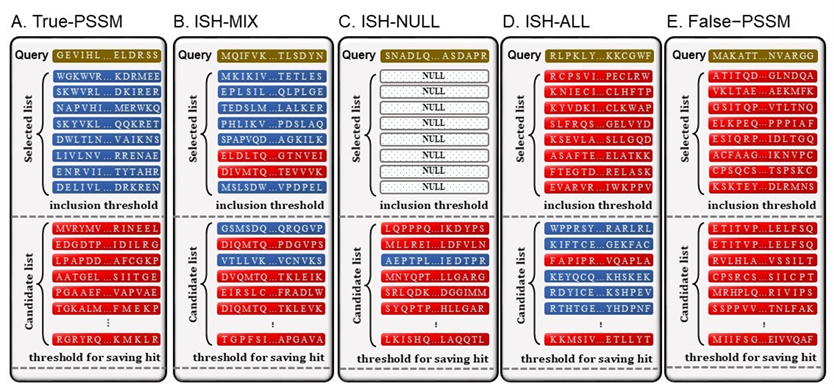

Incorrectly Selected Homology errors
To analyse the problems of PSSM on protein domain databases for protein remote homology detection, we summarize and define three situations as Incorrectly Selected Homology (ISH) errors from the results of PSI-BLAST. ISH errors indicate that true positives exist in the ranking list but the selected list is null or contains false positives. Figure 1 shows three types of ISH errors and other situations of PSSM:
Figure 1. The five situations of PSI-BLAST selecting sequences to construct PSSM profile for protein remote homology detection.
i) True-PSSM (Figure 1A). PSSM is constructed by all true positives in the selected list, which is an ideal situation for PSSM and can describe the correct evolutionary information of query sequences;
ii) ISH-MIX error (Figure 1B). Because the selected list contains false positives and true positives, incorrect evolutionary information is added into PSSM and more false positives are produced at later iterations;
iii) ISH-NULL error (Figure 1C). No sequence exists in the selected list can be used to construct PSSM but true positives exists in the candidate list. Therefore, PSI-BLAST almost cannot produce any results after the next iteration with null PSSM;
iv) ISH-ALL error (Figure 1D). The sequences in the selected list are all false positives but true positives exist in the candidate list. Then, error PSSM is constructed, which almost cannot detect any true positives at the next iteration;
v) False-PSSM (Figure 1E). The ranking list contains no true positive, and therefore there is no more adjustment space for PSSM. In order to construct and keep an ideal situation during the iteration process, rectifying the above errors of PSSM is necessary.